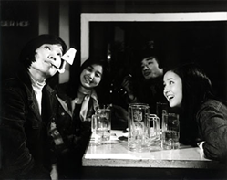
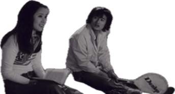
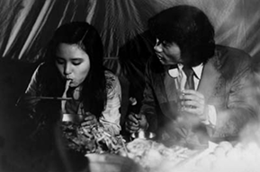
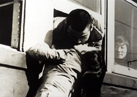

Y대학 철학과에 다니는 병태(윤문섭)와 영철(하재영)은 그룹 미팅을 통해 또래의 H대학 불문과의 영자(이영옥)와 순자(김영숙)을 알게 된다. 그들은 그저 만나고 하릴없이 대화할 뿐이다. 병태는 영자에게 농담처럼 결혼하자고 말하지만, 영자는 철학과 출신은 전망이 없다는 말로 그의 현실을 지적한다. 그 후로도 병태와 영자는 데이트를 즐기지만, 어느 날 영자는 선본 남자와 곧 결혼할지도 모른다는 말을 하며 앞으로 만나지 말자고 통보한다. 한편 언제나 자전거를 타고 다니며 술만 마시면 고래를 찾으러 떠나겠다고 하는 영철은 순자를 좋아하지만, 순자는 말도 더듬고 전망도 보이지 않으며 군 입대 신체검사에서도 탈락한 영철을 거부하고, 영철은 이에 절망한다. 앞이 보이지 않는 상태에서 병태와 영철은 바다로 간다. 예쁜 고래를 잡으러 떠나겠다던 영철은 바닷가 절벽까지 자전거를 몰고 올라가 드넓은 바다로 뛰어든다. 학교는 무기한 휴강에 돌입하고, 텅 빈 교정을 서성이며 병태는 괴로워한다. 결국 병태는 입대를 하고, 병태를 만나지 않겠다던 영자는 역으로 병태를 마중 나온다. 입영열차 차창에 매달려 병태와 영자는 입맞춤을 한다.